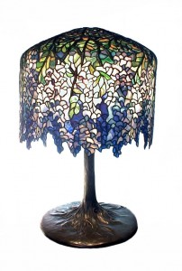
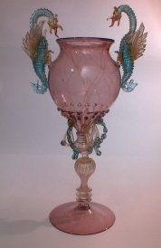

© Muzeul Național Peleș


 printați
printați
+40244 310 918 |
peles.ro@gmail.com |
Colecția de sticlărie
Colecţia de sticlă a Muzeului Naţional Peleş, cuprinzând peste 1500 de piese, s-a constituit în două mari etape, strâns legate de istoria castelului căruia i-a fost destinată. O primă şi decisivă etapă este reprezentată de achiziţiile şi comenzile Familiei Regale, între 1866 – 1941, iar o a doua de achiziţiile Muzeului Peleş, realizate în perioada 1969 – 1974.
Iniţiativa constituirii unei astfel de colecţii a aparţinut Regelui Carol I, urmaşii săi, dintre care se va remarca Regina Maria, continuând să îmbogăţească fondul valoros deja existent.
Colecţia cuprinde piese de provenienţă germană, italiană, austriacă, franceză precum şi vase din cristal de Boemia sau englezesc, realizate în cea de-a doua parte a secolului al XIX-lea şi începutul secolului al XX-lea.
|  | Prin tipurile de comenzi şi achiziţii de piese noi inspirate după modele de epocă, Regele Carol I aparţine ariei comanditarilor de artă istoristă. Astfel, secvenţa germană ilustrează modele decorative ale secolelor al XVI-lea şi al XVII-lea, ce aparţin Renaşterii şi barocului: o iconografie simbolică, efigii imperiale, prinţi electori, cavaleri, steme ale familiilor nobiliare germane. |
Pe lângă piesele de reprezentare, Familia Regală deţinea şi o serie de piese de uz curent: servicii de masă din cristal franţuzesc (Baccarat, Saint Louis) fin gravat cu motive vegetale; serviciu de lichior sau garnitură pentru flori din cristal de Boemia, decorate cu scene cinegetice sau motive florale gravate şi aurite; serviciu pentru baut din cristal englezesc (Webb) tăiat în punct de diamant şi gavat cu cifru regal surmontat de coroană inchisa.
O altă arie de referinţă spre care se orientează Familia Regală în comenzile sale este cea a Artei 1900. Atelierele vieneze Lobmeyr, furnizor al Curţii Imperiale, primesc din partea Casei Regale Române o comandă pentru un serviciu din cristal cuprinzând pahare, boluri, farfurioare, decorat cu scene campestre pictate cu aur coloidal, după cum atestă o factură din anul 1908. Aceleiaşi arii i se circumscrie şi serviciul de toaletă din cristal dublu strat (alb – rubiniu), decorat de Josef Hoffmann precum şi vasele din sticlă cu frumoase irizaţii cu efecte plastice, lucrate în atelierele Loetz’ Witwe. |
 |
Prinţesa de origine britanică, o adeptă a reînvierii tradiţiilor artizanale promovata de atelierele Arts and Crafts din Anglia, a creat ea însăşi lucrări în spirit Art Nouveau. Printre alte realizari ale Reginei Maria se numără şi un set de şase pahare executate in atelier austriac si pictate de ea cu motive florale, păstrate în colecţia de sticlă a Muzeului Naţional Peleş.
Actiunile Familiei Regale de achiziţii şi comenzi în străinătate s-au desfăşurat în paralel cu o politică bine determinată de încurajare a industriei naţionale de sticlărie. În acest sens, se cuvin amintite fabricile de la Azuga şi Mediaş, cărora li s-au comandat piese: fie servicii tradiţionale, personalizate cu cifrul regal, fie moderne, în stil Art Deco. Este cazul serviciului din sticla fumurie expus in castelul Pelisor, care este realizat de Atelierele din Azuga in perioada in care il aveau ca director artistic pe Emerico Montesy, un discipol al fratilor Daum si al lui Emile Gallé, ce studiase arta sticlariei la Nancy.
În perioada 1969 – 1974, Muzeul Peleş a dus o politică susţinută de achiziţii de la persoane particulare (din Bucureşti, Braşov, Râşnov), urmărindu-se completarea fondului existent cu obiecte din cristal de Boemia, dar în special cu piese Gallé, Daum, Lalique.
Interioarele muzeelor Peleş şi Pelişor expun cateva dintre cele mai valoroase piese ale colecţiei şi propun publicului vizitator o întâlnire cu delicata şi fragila lume a sticlă de artă.